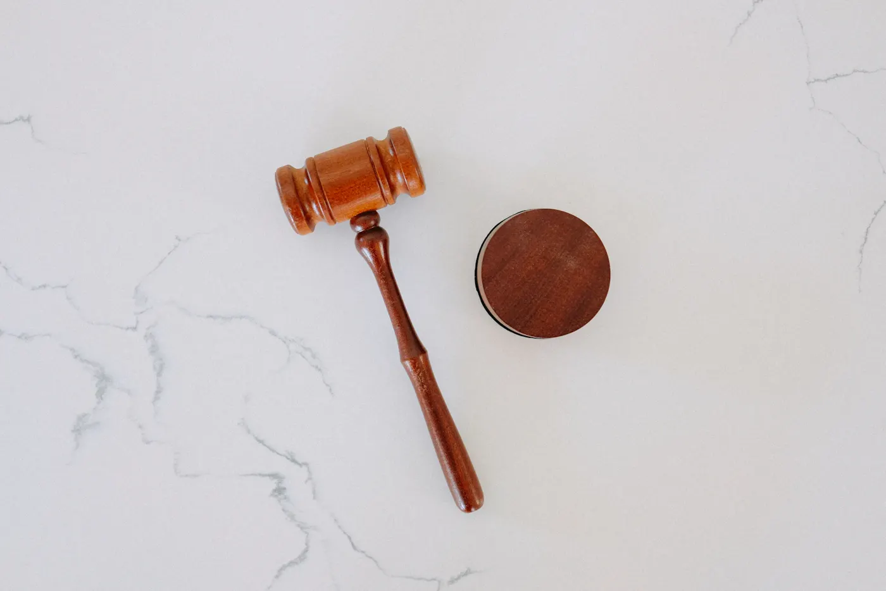

Voor particulieren
Voor particulierenFamilierecht en echtscheiding
Scheiden met onderlinge toestemming of na een moeilijke breuk, en goede afspraken over de kinderen.
Hierover een gesprekMr. Boudewijn Nijsten heeft sinds 1986 een eigen kantoor, sinds 1994 aan de Jan Rosierlaan. U spreekt altijd met hem zelf. Bij het eerste gesprek, bij elke brief en in de rechtszaal.

 Lanaken en Oud-Rekem
Lanaken en Oud-RekemEen breed kantoor, met één vertrouwd gezicht. Particulieren komen voor een scheiding, een ongeval of een ontslag. Ondernemers voor een onbetaalde factuur of een contract dat niet nagekomen wordt.
Voor particulierenScheiden met onderlinge toestemming of na een moeilijke breuk, en goede afspraken over de kinderen.
Hierover een gesprek
Ook voor assisenVerdediging van verdachten en bijstand voor slachtoffers, van het eerste verhoor tot het hof van assisen.
Hierover een gesprek Werkgever of werknemer
Werkgever of werknemerOntslag, een opzegtermijn die niet klopt, een arbeidsovereenkomst of een conflict op het werk.
Hierover een gesprek Politierechtbank
PolitierechtbankNa een ongeval of een overtreding. Schade, verzekeringen en uw zaak voor de politierechter.
Hierover een gesprek Vrederechter
VrederechterWoninghuur en handelshuur, een waarborg die niet terugkomt of een verkoop die misloopt.
Hierover een gesprek Voor ondernemers
Voor ondernemersOnbetaalde facturen eerst minnelijk, en als het moet via de rechtbank. Ook contracten en geschillen met leveranciers.
Hierover een gesprek


Ik studeerde in 1986 af als licentiaat rechten aan de KU Leuven en begon meteen voor mezelf. Eerst in Maasmechelen, sinds 1994 hier aan de Jan Rosierlaan in Lanaken.
Wie bij mij aanklopt, krijgt mij aan de lijn en aan tafel. Ik volg uw dossier zelf op, van de eerste brief tot de pleidooien. Strafrecht is altijd mijn passie gebleven, tot voor het hof van assisen.
Kies uw situatie en vink af wat u al klaar hebt liggen.
Gaat het om een bedrag in geld, dan kan het ereloon volgens de waarde van de zaak berekend worden. Vul het bedrag in en zie per schijf wat het kantoor rekent.
Een indicatie volgens de schaal van het kantoor. In overleg kan dat anders, rekening houdend met de moeilijkheid en de hoogdringendheid van de zaak en de draagkracht van de cliënt.


"Ik wil graag mijn oprechte waardering uitspreken voor de professionele en menselijke begeleiding die ik heb ontvangen van meester Nijsten tijdens mijn echtscheidingsprocedure."
"Zijn aanpak was steeds uiterst professioneel, duidelijk en doordacht. Hij nam de tijd om alles helder uit te leggen."
"…dat Mter. Nijsten mij steeds correct en professioneel begeleidt in mijn procedure."

Wie hier al dertig jaar werkt, kent de mensen, de vrederechter en de rechtbanken in de buurt. Naast het kantoor is voetbal altijd zijn passie geweest.
Het kantoor ontvangt u op afspraak, op wandelafstand van het centrum. Bel even op voorhand, dan wordt er tijd voor u vrijgehouden.
| Maandag | 9 tot 12 · 14 tot 18 uur |
| Dinsdag | 9 tot 12 · 14 tot 18 uur |
| Woensdag | 9 tot 12 · 14 tot 18 uur |
| Donderdag | 9 tot 12 · 14 tot 18 uur |
| Vrijdag | 9 tot 12 · 14 tot 18 uur |
| Zaterdag | gesloten |
| Zondag | gesloten |


Ja. Het kantoor werkt sinds 1986 zo: persoonlijke service en opvolging door de advocaat die uw zaak behandelt.
Per uur, volgens de waarde van de zaak of voor een vooraf afgesproken prestatie. Bij het eerste gesprek bespreekt u samen wat het best past.
Ja. Bij een vergoeding per uur wordt elke prestatie bijgehouden in een prestatiestaat, die u op elk moment mag inkijken.
Ja, u kiest zelf uw advocaat. Breng uw polis mee, dan wordt nagekeken wat gedekt is.
Het kantoor werkt op afspraak. Past het overdag niet, zeg het gerust wanneer u belt. Dan wordt samen een moment gezocht.
Bel het kantoor, stuur een bericht of laat hier kort uw vraag na. Wat u schrijft, blijft vertrouwelijk.
Ik maakte deze demo voor u om te tonen wat er kan. Na een kort gesprek maak ik er iets veel persoonlijkers van, helemaal naar uw wens.
Vrijblijvend. Ik kom langs of we bellen.
Op maat, op uw eigen domein.
Geen voorschot. U betaalt pas als alles klaar is.
Hosting, domeinnaam en kleine wijzigingen, zoals nieuwe openingsuren.
Omdat een voorbeeld meer zegt dan een mail. Zo ziet u meteen wat er kan, en het kost u niets.
Nee. Het gesprek is vrijblijvend. Vindt u het niks, dan is het daarmee gedaan.
Na ons gesprek staat uw site binnen 10 tot 14 dagen online.
Zeker. Uw domeinnaam kan gewoon blijven, de nieuwe site komt in de plaats van de oude.
Nee, dat doe ik op basis van ons gesprek. Eigen foto's zijn mooi meegenomen, maar niet nodig om te starten.